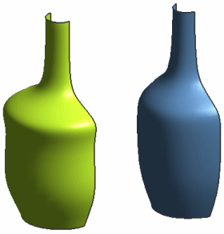

分析片体
-
点击实用工具工具条上的图层设置
 ，然后选中图层6的复选框，并清除图层1以及2的复选框。
，然后选中图层6的复选框，并清除图层1以及2的复选框。 -
调整图形窗口至合适大小。
图层6中包含一个通过点曲面。
观察两个曲面之间的不同，他们都是使用同样的点创建的，右侧的从极点片体比左侧的通过点曲面更光顺。

-
在分析形状工具条中，单击面分析 — 半径 。
-
选择两个曲面。
如果您使用的是3D 图形显卡，您将看到类似如图所示的图像。

-
关闭所有部件。